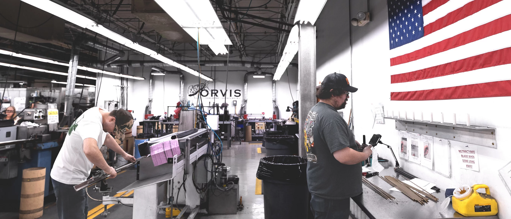
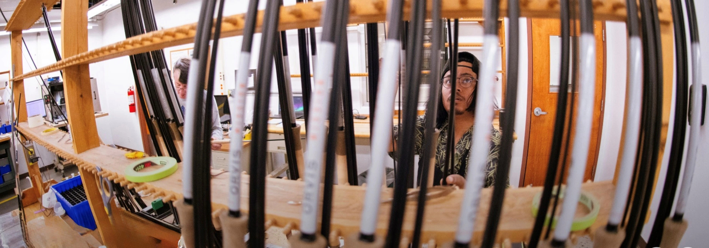

Fabricación de cañas Orvis en Estados Unidos
Las cañas de ORVIS producidas en Estados Unidos representan uno de los estándares más altos dentro de la pesca con mosca. La fabricación en Vermont permite un control completo del proceso, desde el diseño hasta el testeo final.
Este enfoque artesanal no busca producir en volumen masivo, sino asegurar una consistencia impecable, precisión quirúrgica y un comportamiento predecible en el agua, adaptado a las condiciones reales de pesca con mosca en Argentina y el mundo.
Donde la ingeniería se transforma en pesca

Cada caña comienza como un blank de grafito que pasa por múltiples etapas de transformación. A diferencia de productos masivos, cada paso está diseñado para mantener tolerancias precisas.
El objetivo es lograr una caña que responda de forma predecible en distintas situaciones: viento, cambios de distancia y diferentes tipos de mosca.
Proceso de fabricación
La construcción de una caña Orvis incluye varias etapas críticas:
- Corte y preparación del material
- Laminado del blank
- Curado térmico
- Alineación y control de rectitud
- Montaje de guías y componentes
- Testeo final
Este proceso asegura que cada caña mantenga una respuesta consistente dentro del mismo modelo.

Materiales y tecnología
Grafito de alta calidad
Permite blanks livianos con alta recuperación y excelente transferencia de energía.
Diseño del blank
Optimizado para lograr estabilidad del loop y precisión en el lanzamiento.
Componentes premium
Guías, porta reeles y terminaciones pensadas para durabilidad y performance.

Performance en pesca con mosca real
Las cañas Orvis no se diseñan solo en laboratorio. Son probadas en condiciones reales donde influyen factores como el viento, el peso de la línea y el tamaño de la mosca.
Esto las hace especialmente relevantes para escenarios como la pesca en Argentina:
- Trucha en Patagonia (precisión y delicadeza)
- Dorado (potencia y control con moscas grandes)
- Pesca técnica con ninfas o secas (respuesta rápida y sensibilidad)

Control de calidad
Cada caña es inspeccionada antes de salir de fábrica. Esto garantiza consistencia en acción, resistencia y comportamiento.
Este nivel de control es uno de los factores que diferencia a las cañas fabricadas en Estados Unidos.

Datos sobre Orvis Rod Shop
1880 - La caña de bambú Orvis es nombrada "La mejor de su tipo en el mundo" por el destacado escritor de actividades al aire libre Ned Buntline.
1942 - Orvis se une al esfuerzo de la Segunda Guerra Mundial, produciendo bastones de esquí de bambú partido para las tropas estadounidenses.
1989 - Las cañas de mosca Orvis son nombradas "El producto número 1 mejor fabricado en EE. UU." por Tom Peters, autor de En busca de la excelencia.
2018 - Un proceso de fabricación mejorado permite a Orvis introducir piezas intercambiables para reducir el tiempo de reparación de las cañas.
Comprar Orvis en Argentina
Descubrí la gama completa de cañas, reels, líneas y accesorios Orvis, con asesoramiento personalizado de expertos que conocen las aguas argentinas y adaptan cada equipo a tu estilo de pesca para maximizar tu experiencia en pesca con mosca.
Ver productos Orvis